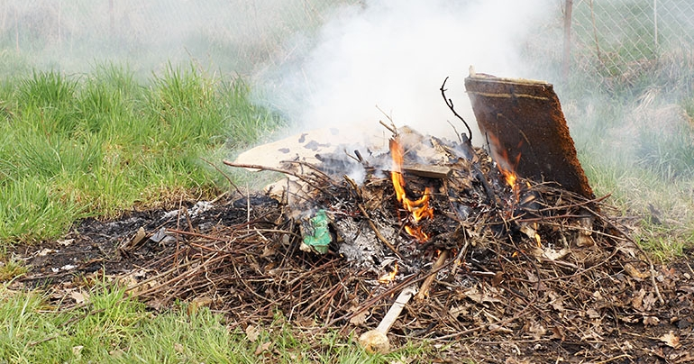

About the issue
Definition: Unregulated burning is the open burning of trash, bush, and waste without permission or control. It releases toxic smoke and fine particles like (PM2.5) which is fine particulate matter, which can travel deep into the lungs and cause health problems.
Local context: In Fabers Road and nearby neighborhoods, burning happens several times a week. Residents report coughing, eye irritation, breathing problems, and discomfort—especially during dry seasons when smoke spreads easily.
Why it matters: The smoke contains irritants like sulfur dioxide and nitrogen oxides, and pollutants such as carbon monoxide and VOCs which is (Volatile Organic Compounds). These affect respiratory health and community well‑being.
Health
Coughing, eye irritation, chest tightness, and breathing difficulties.
Community
Reduced quality of life, stress, and unsafe disposal practices.
Law
Burning trash is illegal in Belize; fines and penalties exist but enforcement is limited.

